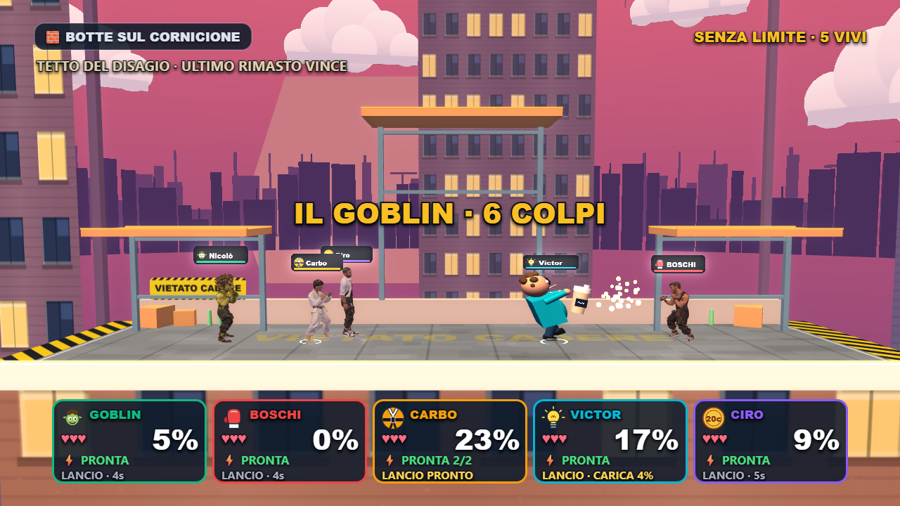
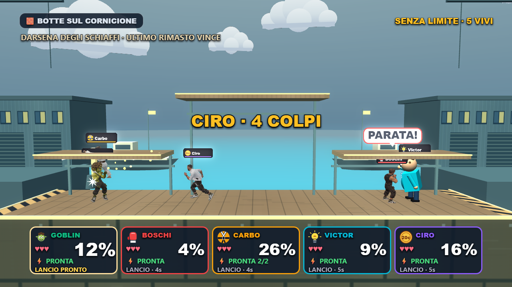
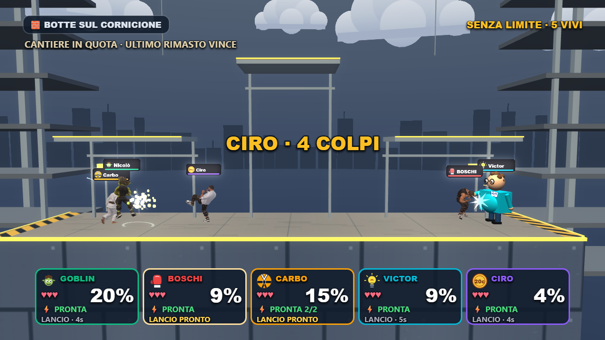

Botte sul Cornicione · 2.0
Tre vite. Vince l’ultimo rimasto. Nessun tempo massimo.
Tre mappe votabili prima della partita, piattaforme diverse, bordi più leggibili, HUD dei colpi e camera rifiniti. Mosse, oggetti e abilità conservati.

Tetto del Disagio · tramonto, palazzi, ponteggi e indicazioni di recupero sul muro.
Darsena degli Schiaffi · passerelle più larghe e basse, materiali del molo, magazzini, barche e mare.
Cantiere in Quota · travi, gru e piattaforma centrale più alta.Verificati spawn da 2 a 5, atterraggi, partita senza scadenza, eliminazione naturale dei bot, voto da due telefoni, pulizia della scena, typecheck e build. Dettagli delle verifiche